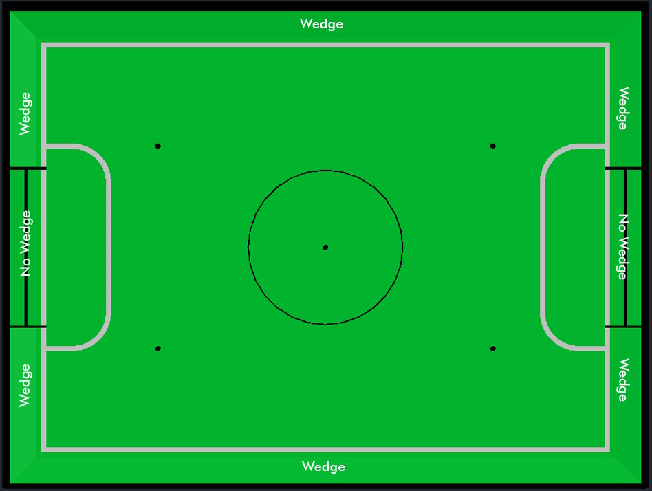
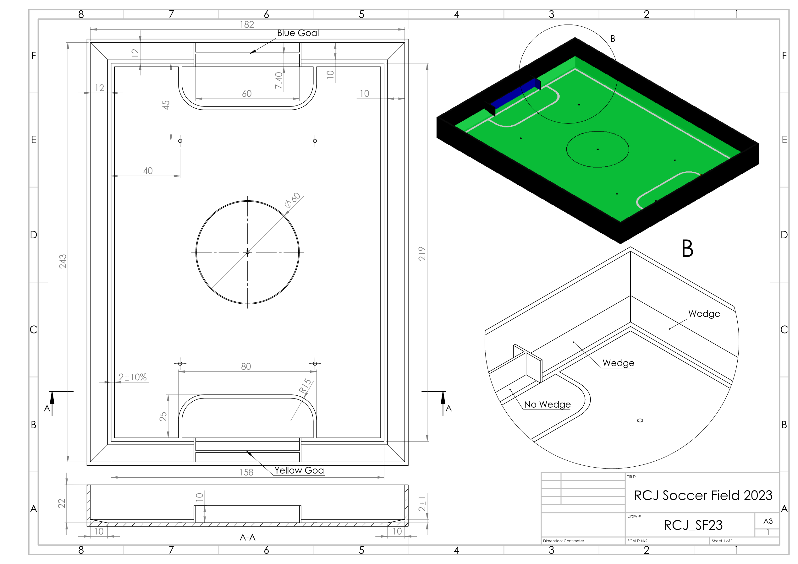

These are the Soccer rules for RoboCupJunior 2025. They are released by the RoboCupJunior Soccer League Committee. The English version of these rules has priority over any translations.
Teams are advised to check the RoboCupJunior Soccer site https://junior.robocup.org/ and Soccer forum https://junior.forum.robocup.org/c/robocupjunior-soccer/5 for procedures and requirements for the international competition and with local tournament organizers for local, regional and super-regional competitions. Each team is responsible for verifying the latest version of the rules prior to competition. Teams should ask for clarifications on the Forum where necessary. [1]
Preface
In the RoboCupJunior Soccer challenge, teams of young engineers design, build, and program two fully autonomous mobile robots to compete against another team in matches. The robots must detect a ball and score into a color-coded goal on a special field that resembles a human soccer field.
To be successful, participants must demonstrate skill in programming, robotics, electronics and mechatronics. Teams are also expected to contribute to the advancement of the community as a whole by sharing their discoveries with other participants and by engaging in good sportsmanship, regardless of culture, age or result in the competition. All are expected to compete, learn, have fun, and grow.
RoboCupJunior Soccer consist of two sub-leagues: Soccer Open and Soccer Lightweight. These rules apply for both sub-leagues. There are two main differences between the two leagues.
-
Soccer Lightweight is played using a special ball that emits an IR signal. Robots may weigh up to 1.4 kg, may have a ball-capturing zone of up to 3.0 cm.
-
Soccer Open is played using a passive, brightly colored orange ball. Robots may weigh up to 2.2 kg, may have a ball-capturing zone of up to 1.5 cm.
| A large part of the overall ranking (for the international tournament, ask you regional tournament organizers) is determined by the judged categories. These award points for documentation, design, innovation, achievement. Rubrics and other teams' documentation can be access through this forum thread: https://junior.forum.robocup.org/t/2024-awards-rubric-draft/3500 |
Please see Rule 6, “BALL” for ball specifications and Rule 9, “LEAGUE REGULATIONS” for more details for specifications/regulations.
If you would like to start with RoboCupJunior Soccer, please contact the organizer of your regional RoboCupJunior competition and ask them about Rule 11, “ENTRY LEAGUE”.
Unless specified otherwise, all parts of these rules are released under the terms of the Creative Commons Attribution-ShareAlike License.
1. RoboCupJunior International 2025 General Rules
These rules apply to the international RoboCupJunior competition. However, regional, super-regional, and local tournaments may have variations or adaptations to these rules to suit their specific competition needs. It is important to check with the organizers of the tournaments you are participating in to confirm which exact rules will be in use.
If teams are unsure about any aspects of the General Rules or specific League Rules, they are encouraged to inquire via the official RoboCupJunior Forum for clarification: https://junior.forum.robocup.org/
1.1. Team Size
Minimum Team Size: Teams must consist of at least 2 members.
Maximum Team Size:
-
Soccer and Rescue Leagues: 4 members.
-
OnStage League: 5 members.
Shared Members and Robots: No team member(s) or robot(s) may be shared between teams.
1.2. Team Members
Age Requirements for RoboCupJunior International Tournaments:
-
Minimum age: 14 years old.
-
Maximum age: 19 years old.
-
Age is counted as of July 1st for the international event each year.
Entry Leagues: RoboCupJunior Entry leagues and other "Primary" divisions (where minimum age may vary) are not run at the international competition but feature in many regions and SuperRegional tournaments.
Technical Roles: Every team member must have a defined technical role (mechanical/design, electrical/sensing, software etc.) and should be able to explain their role during technical judging.
1.3. Robot Communication
Permitted Communication: Communication between robots during gameplay is allowed as long as it uses the 2.4GHz spectrum and its power output does not exceed 100 mW EIRP under any circumstances.
Responsibility: Teams are responsible for managing their robot communication. Spectrum availability is not guaranteed.
Component Communication: Communication between components of the same robot is permitted under the general guidelines.
League Adaptability: Each league may modify the robot communication rules to ensure they meet their specific requirements.
1.4. Safety and Power Requirements
Electrical Power:
-
Robots must not use mains electricity.
-
Maximum allowed voltage: 48V DC or 25V AC RMS.
-
Voltage must be easily measured during inspections, and measuring points must be covered for safety or designed with safety considerations in place.
Battery Safety:
-
Lithium batteries must be stored in safety bags, and charging must be supervised by team members in competition areas.
-
Teams must follow safety protocols, including battery fire handling and evacuation procedures.
Robot Safety Design:
-
Power Management: Secure batteries, safe wiring, and emergency stop functionality.
-
Mechanical Safety: No sharp edges, pinch points, or other hazards. Actuators must be appropriate for the robot’s size and function.
-
Hazardous Behavior: Teams must report potentially dangerous robot behaviors at least two weeks before the event.
1.5. RCJ Team Posters
Purpose: Posters are a tool for sharing robot designs and insights with judges, teams, and the public. Posters will be hung in public competition areas in the venue and digital copies or photographs will be shared by RCJ after the competition.
Size: Posters must be no larger than A1 size (60 x 84 cm).
Content: Posters should summarize design documents and present the robot’s capabilities in an engaging format.
1.6. Technical Description Video (See League Documentation)
Content:
-
Robotic Demonstration: Show fully functional robot systems to highlight technical aspects.
-
Design Process: Explain design choices and team problem-solving approaches.
-
Presentation: Clear and high-quality, explaining innovative or unusual techniques.
-
Innovation & Sustainability: Highlight new technologies and sustainable practices.
Submission: Guidelines will specify video length and deadlines per league.
1.7. Sharing Team Resources
Sharing: Materials submitted by teams as part of the documentation submission will be shared on GitHub repositories for the leagues: https://github.com/robocup-junior
Credit: Teams must credit creators of external work and adhere to licensing rules. The focus should remain on personal growth and learning.
1.8. Plagiarism Guidelines
External Code Use: Teams are allowed to use external code but must credit the original creators.
Learning Priority: Teams should prioritize learning and not use complete solutions from others. Always pay attention to licensing rules.
1.9. Bill of Materials (BOM)
Submission: Teams must submit a BOM listing major components and materials used.
Details: The BOM must include:
-
Component name/description (e.g., part number).
-
Supplier/source of the component (including PCBs/machined components).
-
Status (new/reused).
-
Kit or custom-built.
-
Price.
Template: A standardized BOM template will be provided with the league documentation submissions for the international competition.
Changes from the 2024 RoboCupJunior Soccer Rules
The rule changes developed by the Soccer League Committee in cooperation with the RoboCup Junior Soccer Community (please continue to post ideas for the future on the forum any time) aim to improve gameplay.
Detailed changes are listed below and link to the corresponding place in the rule.
Construction and Programming have to be performed exclusively by the students
Robots must be constructed and programmed exclusively by student members of the team. Mentors, teachers, parents or companies should not be involved in the design, construction, assembly, programming or debugging of robots. To avoid possible disqualification, it is extremely important that teams abide by Rule 9, “LEAGUE REGULATIONS”, especially Rule 9.2.4, “Construction” and Rule 9.2.5, “Programming”, and all other competitor’s rules.
If in doubt, please consult with your Regional Representative before registering your team.
2. GAMEPLAY
2.1. Game procedure and length of a game
RCJ Soccer games consist of two teams of robots playing soccer against each other. Each team has two autonomous robots. The game will consist of two halves. The duration of each half is 10-minutes. There will be a 5-minute break in between the halves.
The game clock will run for the duration of the halves without stopping (except when a referee wants to consult another official). The game clock will be run by a referee or a referee assistant (see Rule 8.1, “Referee and referee assistant” for more information on their roles).
Teams are expected to be at the field 5 minutes before their game starts. Being at the inspection table does not count in favor of this time limit. Teams that are late for the start of the game may be penalized one goal per 30 seconds at the referee’s discretion.
The final game score will be trimmed so that there is at most 10-goal difference between the losing and the winning team.
2.2. Pre-match meeting
At the start of the first half of the game, a referee will toss a coin. The team mentioned first in the draw shall call the coin. The winner of the toss can choose either which end to kick towards, or to kick off first. The loser of the toss chooses the other option. After the first half, teams switch sides. The team not kicking off in the first half of the game will kick off to begin the second half of the game.
During the pre-match meeting the referee or their assistant may check whether the robots are capable of playing (i.e., whether they are at least able to follow and react to the ball). If none of the robots is capable of playing, the game will not be played and zero goals will be awarded to both teams.
2.3. Kick-off
Each half of the game begins with a kick-off. All robots must be located on their own side of the field. All robots must be halted. The ball is positioned by a referee in the center of the field.
The team kicking off places their robots on the field first.
The team not kicking off will now place their robots on the defensive end of the field. All robots on the team not kicking off must be at least 30 cm away from the ball (outside of the center circle).
Robots cannot be placed out of bounds. Robots cannot be repositioned once they have been placed, except if the referee requests to adjust their placement to make sure that the robots are placed properly within the field positions.
On the referee’s command (usually by whistle), all robots will be started immediately by each captain. Any robots that are started early will be removed by the referee from the field and deemed damaged.
Before a kick-off, all damaged or out-of-bounds robots are allowed to return to the playing field immediately if they are ready and fully functional.
If no robots are present at a kick-off (because they have moved out-of-bounds Rule 2.8, “Out of bounds” or are damaged Rule 2.9, “Damaged robots”), the penalties are discarded and the match resumes with a Rule 2.3.1, “Neutral kick-off”.
2.3.1. Neutral kick-off
A neutral kick-off is the same as the one described in Rule 2.3, “Kick-off” with a small change: all robots must be at least 30 cm away from the ball (outside of the center circle).
2.4. Scoring
A goal is scored when the ball strikes or touches the back wall of the goal. Goals scored by any robot have the same end result: they give one goal to the team on the opposite side. After a goal, the game will be restarted with a kick-off from the team who was scored against.
2.5. Ball movement
A robot cannot hold a ball. Holding a ball is defined as taking full control of the ball by removing all of degrees of freedom. Examples for ball holding include fixing a ball to the robot’s body, surrounding a ball using the robot’s body to prevent access by others, encircling the ball or somehow trapping the ball with any part of the robot’s body. If a ball does not roll while a robot is moving, it is a good indication that the ball is trapped.
The only exception to holding is the use of a rotating drum (a "dribbler") that imparts dynamic back spin on the ball to keep the ball on its surface.
Other players must be able to access the ball.
The ball needs to stay within the bounds of the field, as defined by the walls. If a robot moves the ball outside of the field (that is, beyond the walls or above their height), it is deemed damaged. (Rule 2.9, “Damaged robots”)
Any robot must approach and touch the ball when it is placed on the nearest neutral spot. It must do this before lack of progress is called. When on its own side of the field, any robot must be able to move the ball from the nearest neutral spot to the opponent’s side of the field. If a specific robot does not act this way, referees may deem it damaged at their discretion. (See Damaged Robots.) This rule does not apply if the robot is hindered from detecting or playing the ball by the opponent.
| If placing the ball on a neutral spot would confer a gameplay advantage to one team or referees don’t place the ball on the closest neutral spot for other reasons a robot is not required to approach the robot at further away neutral spots. |
2.6. Inside the Penalty Area
No robots are allowed to be fully inside the penalty area. As the penalty areas are marked with a white line, the Out of Bounds and Out of Reach rules apply as well. (Rule 2.8, “Out of bounds”)
If two robots from the same team are at least partially in a penalty area, the robot further from the ball will be moved to the furthest unoccupied neutral spot immediately. If this happens repeatedly, a robot may be deemed damaged at referee’s discretion. (Rule 2.9, “Damaged robots”)
If an attacking and a defending robot touch each other while at least one of them is at least partially inside the penalty area, and at least one of them has physical contact with the ball, this may be called "pushing" at the referee’s discretion. In this case, the ball will be moved to the furthest unoccupied neutral spot immediately.
If a goal is scored as a result of a "pushing" situation, it will not be granted.
2.7. Lack of progress
Lack of progress occurs if there is no progress in the gameplay for a reasonable period of time and the situation is not likely to change. Typical lack of progress situations are when the ball is stuck between robots, when there is no change in ball and robot’s positions, or when the ball is beyond detection or reach capability of all robots on the field.
After a visible and loud count [2],
a referee will call lack of progress and
will move the ball to the nearest unoccupied neutral spot. If this does not
solve the lack of progress, the referee can move the ball to a different
neutral spot.
2.8. Out of bounds
If a robot touches a wall or moves completely into the penalty area it
will be called for being out of bounds. When this situation arises, the
robot is given a one-minute penalty, and the team is asked to remove the robot
from the field. There is no time stoppage for the game itself. The robot is
allowed to return if a kick-off occurs before the penalty has elapsed.
The one-minute penalty starts when the robot is removed from play. Furthermore, any goal scored by the penalized team while the penalized robot is on the field will not be granted. Out-of-bounds robots can be fixed if the team needs to do so, as described in Rule 2.9, “Damaged robots”.
After the penalty time has passed, robot will be placed on the unoccupied neutral spot furthest from the ball, facing its own goal.
A referee can waive the penalty if the robot was accidentally pushed out of bounds by an opposing robot. In such a case, the referee may have to slightly push the robot back onto the field.
The ball can leave and bounce back into the playing field. The referee calls
out of reach, and will move the ball to the nearest unoccupied neutral spot
when one of the following conditions occurs:
-
the ball remains outside the playing field too long, after a visible and loud count [3],
-
any of the robots are unable to return it into the playing field (without their whole body leaving the playing field), or
-
the referee determines that the ball will not come back into the playing field.
2.9. Damaged robots
If a robot is damaged, it has to be taken off the field and must be fixed before it can play again. Even if repaired, the robot must remain off the field for at least one minute or until the next kick-off is due.
Some examples of a damaged robot include:
-
it does not respond to the ball, or is unable to move (it lost pieces, power, etc.).
-
it continually moves into the penalty area or out of bounds.
-
it turns over on its own accord.
Computers and repair equipment are not permitted in the playing area during gameplay. Usually, a team member will need to take the damaged robot to an "approved repair table" near the playing area. A referee may permit robot sensor calibration, computers and other tools in the playing area, only for the 5 minutes before the start of each half.
After a robot has been fixed, it will be placed on the unoccupied neutral spot furthest from the ball, facing its own goal. A robot can only be returned to the field if the damage has been repaired. If the referee notices that the robot was returned to the field with the same original problem, they may ask the robot to be removed and proceed with the game as if the robot had not been returned.
Only the referee decides whether a robot is damaged. A robot can only be taken off or returned with the referee’s permission.
If both robots from the same team are deemed damaged at kick-off, gameplay will be paused and the remaining team will be awarded 1 goal for each elapsed 30 seconds that their opponent’s robots remain damaged. However, these rules only apply when none of the two robots from the same team were damaged as the result of the opponent team violating the rules.
Whenever a robot is removed from play, its motors must be turned off.
2.10. Human interference
Except for the kick-off, human interference from the teams (e.g. touching the robots) during the game is not allowed unless explicitly permitted by a referee. Violating team(s)/team member(s) may be disqualified from the game.
The referee or a referee assistant can help robots get unstuck if the ball is not being disputed near them and if the situation was created from normal interaction between robots (i.e. it was not a design or programming flaw of the robot alone). The referee or a referee assistant will pull back the robots just enough for them to be able to move freely again.
2.11. Interruption of Game
In principle, a game will not be stopped.
A referee can stop the game if there is a situation on or around the field which the referee wants to discuss with an official of the tournament or if the ball malfunctions and a replacement is not readily available.
When the referee has stopped the game, all robots must be stopped and remain on the field untouched. The referee may decide whether the game will be continued/resumed from the situation in which the game was stopped or by a kick-off.
3. TEAM
3.1. Regulations
A team must have more than one member to form a RoboCupJunior team to participate in the international competition. Team member(s) and/or robot(s) cannot be shared between teams.
Each team member needs to carry a technical role.
Each team must have a captain. The captain is the person responsible for communication with referees. The team can replace its captain with another team member during the competition. Each team is allowed to have at most two members beside the field during gameplay: they will usually be the captain and an assistant team member.
4. ROBOTS
4.1. Number of robots / substitutions
Each team is allowed to have at most two robots for the full tournament. The substitution of robots during the competition within the team or with other teams is forbidden.
4.2. Interference
Robots are not allowed to be colored orange, yellow or blue in order to avoid interference. Orange, yellow, blue colored parts used in the construction of the robot must either be occluded by other parts from the perception by other robots or be taped/painted with a neutral color.
Robots must not produce magnetic interference in other robots on the field.
Robots must not produce visible light that may prevent the opposing team from playing when placed on a flat surface. Any part of a robot that produces light that may interfere with the opposing robot’s vision system must be covered. For Lightweight-specific regulations see Rule 9.2.2, “Infrared interference in Lightweight”
The referee can interrupt a game in progress if any kind of interference from spectators is suspected (IR emitters, camera flashes, mobile phones, radios, computers, etc.). However, robots are expected to be capable of dealing with any visible colors above the walls (e.g. blue, yellow, green or orange shirts) either in hardware (e.g. limiting the field of view from looking up) or in software (e.g. masking the input image).
A team claiming that their robot is affected by the other team’s robot in any way must show the proof/evidence of the interference. Any interference needs to be confirmed by the tournament organizers if a claim is placed by the other team.
4.3. Control & Communication
The use of remote control of any kind is not allowed during the match. Robots must be started and stopped manually by humans and be controlled autonomously.
Robots are not allowed to use any kind of communication during gameplay unless the communication between robots is via Bluetooth class 2 or class 3 [4] or via any other device that communicates using the 802.15.4 protocol (e.g., ZigBee and XBee).
Teams are responsible for their communication. The availability of frequencies cannot be guaranteed.
For only the World Championships, starting in Brazil 2025, use of a Communications Module is required for referees to control the robots. See Rule 10.2, “Competition Gameplay”
4.4. Agility
Robots must be constructed and programmed in a way that their movement is not limited to only one dimension (defined as a single axis, such as only moving in a straight line). They must move in all directions, for example by turning.
4.5. Handle
All robots must have a stable and easily noticeable handle to hold and to lift them. The handle must be easily accessible and allow the robot to be picked up from at least 5 cm above the highest structure of the robot.
The dimensions of the handle may exceed the robot height limitation, but the part of the handle that exceeds this limit cannot be used to mount components of the robot.
The weight of the robot includes that of the handle.
4.6. Top Markers
A robot must have markings in order to be distinguished by the referee. Each robot must have a white plastic circle with a diameter of at least 4 cm mounted horizontally on top. This white circle will be used by the referee to write numbers on the robots using markers, therefore the white circles must be accessible and visible. The top markers do not need to be within the size limit of the robot.
Before the game, the referee will designate the numbers for each robot and will write them on the top white circle. Robots not carrying the top white circle are not eligible to play.
4.7. Violations
Robots that do not abide by the specifications/regulations (see Rule 9.2, “Regulations”) are not allowed to play, unless these rules specify otherwise.
If violations are detected during a running game the team may be disqualified for that game.
If similar violations occur repeatedly, the team may be disqualified from the tournament.
6. BALL
6.1. Specification for Soccer Lightweight Ball
Starting in 2026, Lightweight Soccer will be moving to a new IR Ball. The key difference with this ball is the size change from 74mm to 42mm diameter, which is the same size as the Open League’s Passive ball. More information will be released during the 2025 season by the Committee. This ball is Open-Source, so anyone can produce one from the files & instructions on the GitHub Page here: https://github.com/robocup-junior/ir-golf-ball
6.3. Tournament balls
Balls for the tournament must be made available by the tournament organizers. Tournament organizers are not responsible for providing balls for practice.
7. CODE OF CONDUCT
7.1. Fair Play
It is expected that the aim of all teams is to play a fair and clean game of robot soccer. It is expected that all robots will be built with consideration to other participants.
Robots are not allowed to cause deliberate interference with or damage to other robots during normal gameplay.
Robots are not allowed to cause damage to the field or to the ball during normal gameplay.
A robot that causes damage may be disqualified from a specific match at the tournament organizer’s discretion.
Humans are not allowed to cause deliberate interference with robots or damage to the field or the ball.
Teams that do not abide by the rules are not allowed to participate.
7.2. Behavior
All participants are expected to behave themselves. All movement and behavior is to be of a subdued nature within the tournament venue.
7.3. Help
Mentors (teachers, parents, chaperones, and other adult team-members including translators) are not allowed in the student work area unless it is explicitly but temporarily permitted by tournament organizers. Only participating students are allowed to be inside the work area.
Mentors must not touch, build, repair, or program any robots.
7.4. Sharing
The understanding that any technological and curricular developments should be shared among the RoboCup and RoboCupJunior participants after the tournament has been a part of world RoboCup competitions.
7.5. Spirit
It is expected that all participants, students, mentors, and parents will respect the RoboCupJunior mission.
It is not whether you win or lose, but how much you learn that counts!
7.6. Violations / Disqualification
Teams that violate the code of conduct may be disqualified from the tournament. It is also possible to disqualify only single person or single robot from further participation in the tournament.
In less severe cases of violations of the code of conduct, a team will be given a warning. In severe or repeated cases of violations of the code of conduct a team may be disqualified immediately without a warning.
8. CONFLICT RESOLUTION
8.1. Referee and referee assistant
The referee is a person in charge of making decisions with regards to the game, according to these rules, and may be assisted by a referee assistant.
During gameplay, the decisions made by the referee and/or the referee assistant are final.
Any argument with the referee or the referee assistant can result in a warning. If the argument continues or another argument occurs, this may result in immediate disqualification from the game.
Only the captain has a mandate to freely speak to the referee and/or their assistant. Shouting at a referee and/or their assistant, as well as demanding a change in ruling may be penalized by a warning at the referee’s discretion.
At the conclusion of the game, the result recorded in the scoresheet is final. The referee will ask the captains to add written comments to the scoresheet if they consider them necessary. These comments will be reviewed by the tournament organizers.
8.2. Rule clarification
Rule clarification may be made by members of the tournament organizers and the Soccer League Committee, if necessary even during a tournament.
8.3. Rule modification
If special circumstances, such as unforeseen problems or capabilities of a robot occur, rules may be modified by the tournament organizers, if necessary even during a tournament.
8.4. Regulatory statutes
Each RoboCupJunior competition may have its own regulatory statutes to define the procedure of the tournament (for example the SuperTeam system, game modes, the inspection of robots, interviews, schedules, etc.). Regulatory statutes become a part of this rule.
9. LEAGUE REGULATIONS
9.1. Preamble
According to rule 3.8 of the RoboCupJunior Soccer Rules, each league has its own additional regulations. They become a part of the rules.
For RoboCupJunior , there are two sub-leagues as follows [5]:
-
Soccer Lightweight
-
Soccer Open
All team members need to be within the age range specified in the RoboCupJunior General Rules which can be found at http://junior.robocup.org/robocupjunior-general-rules/.
As described in Rule 6.1, “Specification for Soccer Lightweight Ball” and Rule 6.2, “Specification for Soccer Open Ball”, the matches in the Soccer Open sub-league are conducted using a passive ball, whereas the matches in the Soccer Lightweight sub-league are played using the IR ball.
9.2. Regulations
9.2.1. Dimensions
Robots will be measured in an upright position with all parts extended. A robot’s dimensions must not exceed the following limits:
sub-league |
Soccer Open |
Soccer Lightweight |
size [0] |
18.0 cm |
22.0 cm |
height |
18.0 cm [1] |
22.0 cm [1] |
weight |
No limit [6] [2] |
1400 g [2] |
ball-capturing zone |
1.5 cm |
3.0 cm |
| [0] Robot must fit smoothly into a cylinder of this diameter |
| [2] We strongly encourage teams to include protection circuits for Lithium-based batteries |
| [3] The voltage limit relates to the maximum voltage at any point and any time on the robot, not nominal voltages. |
Ball-capturing zone is defined as any internal space created when a straight edge is placed on the protruding points of a robot. This means the ball must not enter the convex hull of a robot by more than the specified depth. Furthermore, it must be possible for another robot to take possession of the ball.
9.2.2. Infrared interference in Lightweight
Components designed to emit IR (e.g. ToF, LiDAR, IR distance sensors, IR LEDs/LASERs etc.) are not allowed and tournament organizers will require such devices to be removed or covered up.
In Lightweight, infrared light reflecting materials must not be visible. If robots are painted, they must be painted matte. Minor parts that reflect infrared light could be used as long as other robots are not affected.
9.2.3. Limitations
A robot may use any number of cameras without restrictions on lenses, optical parts, optical systems, and total field of view. Components may be sourced in any way the team sees fit.
No voltage may exceed 48V DC or 25V AC RMS at any time and maximum voltage must be available for demonstration and measurement at inspections. When not in use measurement contacts must be protected from accidental touches or short circuits. Each robot must be designed to allow verifying the voltage of power packs and its circuits.
[7]
Kicker strength is subject to compliance check at any time during the competition. During gameplay, a referee can ask to see a sample kick on the field before each half when a damaged robot is returned to the field or when the game is about to be restarted after a goal. If the referee strongly suspects that a kicker exceeds the power limit, they can require an official measurement. See Appendix D, Kicker Power Measuring Procedures for more details.
9.2.4. Construction
| Robots must be constructed exclusively by the student members of a team. Mentors, teachers, parents or companies may not be involved in the design, construction, and assembly of robots. |
For the construction of a robot, any robot kit or building block may be used as long as the design and construction are primarily and substantially the original work of a team. This means that commercial kits may be used but must be substantially modified by the team. It is neither allowed to mainly follow a construction manual, nor to just change unimportant parts.
Indications for violations are the use of commercial kits that can basically only be assembled in one way or the fact that robots from different team(s), build from the same commercial kit, all basically look or function the same.
Robots must be constructed in a way that they can be started by the captain without the help of another person.
Since a contact with an opponent robot and/or dribbler that might damage some parts of robots cannot be fully anticipated, robots must have all its active elements properly protected with resistant materials. For example, electrical circuits and pneumatic devices, such as pipelines and bottles, must be protected from all human contact and direct contact with other robots.
| All driven dribbler gears must be covered with metal or hard plastic. |
When batteries are transported or moved, it is strongly recommended that safety bags be used. Reasonable efforts should be made to make sure that in all circumstances robots avoid short-circuits and chemical or air leaks.
| The use of swollen, tattered or otherwise dangerous battery is not allowed. |
9.2.5. Programming
Robots must be programmed exclusively by student members of the team. Mentors, teachers, parents or companies should not be involved in the programming and debugging of robots.
For the programming of the robots, any programming language, interface or integrated development environment (IDE) may be used. The use of programs that come together with a commercial kit (especially sample programs or presets) or substantial parts of such programs are not allowed. It is not allowed to use sample programs, not even if they are modified.
9.2.6. Inspections
Robots must be inspected and certified every day before the first game is played. The tournament organizers may request other inspections if necessary, including random inspections which may happen at any time. The routine inspections include:
-
Weight restrictions for the particular sub-league (see Rule 9.2.1, “Dimensions”).
-
Robot dimensions (see Rule 9.2.1, “Dimensions”).
-
Voltage restrictions (see Rule 9.2.1, “Dimensions” and Rule 9.2.3, “Limitations”).
-
Kicker strength limits, if the robot has a kicker (see Appendix D, Kicker Power Measuring Procedures).
Proof must be provided by each team that its robots comply with these regulations, for example, by a detailed documentation or logbook. Teams may be interviewed about their robots and the development process at any time during a tournament.
10. INTERNATIONAL COMPETITION
10.1. Team
Maximum team size is 4 members for RoboCupJunior Soccer.
This rule has been removed from 2025 onwards. [8]
10.2. Competition Gameplay
Starting from the 2025 International Competition in Brazil, the Soccer League Committee will provide each team with a Communication Module. This allow for easier co-ordination of games and referee control of robots during matches. Each team will be expected to interface with this module using a single 2.54mm GPIO pin at present to start and stop the robots. The Soccer League Committee plans on extending this to using UART or I²C for more complex applications in future years. Please see the GitHub page for more information on the module: https://github.com/robocup-junior/soccer-communication-module
10.3. Interviews
During the international competition, the tournament organizers will arrange to interview teams during the Setup Day of the event. This means that the teams need to be already present early on this day. Teams must bring robots, the code that is used to program them and any documentation to the interview.
During an interview, at least one member from each team must be able to explain particularities about the team’s robots, especially with regards to its construction and its programming. An interviewer may ask the team for a demonstration. The interviewer may also ask the team to write a simple program during the interview to verify that the team is able to program its robot.
All teams are expected to be able to conduct the interview in English. If this poses a problem, the team may ask for a translator to be present at the interview. If the tournament organizers are not able to provide a translator, the team is required to do so. During the interview, the team will be evaluated using so called Rubrics, which are published on the website mentioned in the beginning of these rules.
The Soccer League Committee recommends the implementation of interviews in regional competitions as well, but this is not mandatory.
10.4. Technical Challenges
Inspired by the major leagues and the need for further technological advancement of the leagues, the Soccer League Committee runs what are called Technical Challenges. New challenges are added each year, and are unknown until during the International Competition.
The idea of these challenges is to give the teams an opportunity to show off various abilities of their robots which may not get noticed during the regular games. Furthermore, the Soccer League Committee envisions these challenges to be a place for testing new ideas that may make it to the future rules, or otherwise shape the competition.
Any RoboCupJunior Soccer team will be eligible to try to tackle these challenges. Unless otherwise stated, any robot taking part in these challenges needs to abide by these rules in order to successfully complete it.
10.5. Further information on International Competition
All teams qualified to the international competition must share their designs, both hardware and software, with all present and future participants. These teams are also required to send a digital portfolio before the competition. Further details on how will be provided by the Soccer League Committee which acts as the tournament organizers for the international competition.
During the competition days of the international competition (as well as before the event) the team members are responsible for checking all relevant information published by the Soccer League Committee or any other RoboCup official.
There will also be a SuperTeam competition, in which various teams from around the world share their robots in one "SuperTeam" and play against other SuperTeams on a so called "Big Field". Teams could utilise different camera lenses or sensors optimised for the larger playing fields to improve their performance. The full rules of this challenge can be found at https://robocup-junior.github.io/soccer-rules/master/superteam_rules.html
Teams competing in the international competition can receive awards for their performance. These awards are decided and introduced by the Soccer League Committee, which publishes all necessary details well before the actual event. In the past years they were awarded for best poster, presentation, robot design, team spirit and individual games.
Note that as stated in Rule 7.5, “Spirit”, it is not whether you win or lose, but how much you learn that counts!
11. ENTRY LEAGUE
In order to help newcomers experience the RoboCupJunior Soccer competition, the Soccer League Committee would like to encourage competitions to include a so called "Entry League". Although such a league will not be part of the international competition, the Soccer League Committee still believes that it is worthwhile to make it part of regional and super-regional competitions. To this end, the Soccer League Committee has prepared a suggested ruleset. [9] Some regional and super-regional competitions already have rulesets and will likely make changes to the suggested rulesets or replace them entirely for their events. [10] Teams should ask their local/regional/super-regional tournament organizers for details on what Entry leagues (if any) will be running in their region.
The Soccer League Committee will additionally post what it knows on the news thread on the forum (https://junior.forum.robocup.org/t/soccer-entry-league-news-feed/2677).
Appendix A: Technical Specification For Soccer Field
A.1. Dimensions of the field
The playing field is 158 cm by 219 cm. The field is marked by a white line which is part of the playing field. Around the playing field, beyond the white line, there is an outer area of 12 cm in width.
The floor near the exterior wall includes a wedge, which is an incline with a 10 cm base and 2 +/- 1 cm rise for allowing the ball to roll back into play when it leaves the playing field. Note that the goal should not contain the wedge.
Total dimensions of the field, including the outer area, are 182 cm by 243 cm.
A.2. Walls
Walls are placed all around the field, including behind the goals and the out-area. The height of the walls is 22 cm. The walls are painted matte black.
A.3. Goals
The field has two goals, centered on each of the shorter sides of the playing field. The goal inner space is 60 cm wide, 10 cm high and 74 mm deep, box shaped.
The goal "posts" are positioned over the white line marking the limits of the field.
The interior walls and of each goal are colored matte, one goal yellow and the other goal blue. It is recommended that the blue be of a brighter shade so that it is different enough from the black exterior.
A.4. Floor
The floor consists of green carpet ideally of darker shade on top of a hard level surface. Teams should be prepared to adjust to different levels of contrast between the green carpet and lines as some events may be restricted to using lighter shades of green. All lines on the field should be painted, marked with tape, or installed as white carpet and be somewhat resistant to tearing or ripping. Lines should have a width of 20mm (±10%).
It is impractical to set international constraints on carpet other than it being green. In the spirit of the competition, teams should design robots to be tolerant or adaptable to different fibers, textures, construction, density, shades, and designs of carpet especially when competing amongst different regions. Teams are encouraged to visit regional resources or reach out to Local Organization Committee for suggestions if desiring to build their own practice field(s).
A.5. Neutral spots
There are five neutral spots defined in the field. One is in the center of the field. The other four are adjacent to each corner, located 45 cm along the long edge of the field. They align with the sides of the penalty areas. The neutral spots can be drawn with a thin black marker. The neutral spots ought to be of circular shape measuring 1 cm in diameter.
A.6. Center circle
A center circle will be drawn on the field. It is 60 cm in diameter. It is a thin black marker line. It is there for Referees and Captains as guidance during kick-off.
A.7. Penalty areas
In front of each goal there is a 25 cm wide and 80 cm long penalty area with rounded front corners (15cm radius).
The penalty areas are marked by a white line of 20 mm (±10%) width. The line is part of the area.
A.8. Lighting and Magnetic Conditions
The tournament organizers will do their best to limit the amount of external lightning and magnetic interference. However, the robots need to be constructed in a way which allows them to work in conditions that are not perfect (i.e. by not relying on compass sensors or specific lightning conditions).
FIELD DIAGRAMS


Appendix B: Technical Specification for pulsed Soccer Ball
B.1. Preamble
Answering to the request for a soccer ball for RCJ tournaments that would be more robust to interfering lights, less energy consuming and mechanically more resistant, the Soccer League Committee defined the following technical specifications with the special collaboration from EK Japan and HiTechnic.
Producers of these balls must apply for a certification process upon which they can exhibit the RCJ-compliant label and their balls used in RCJ tournaments.
Balls with these specifications can be detected using specific sensors but also common IR remote control receivers (TSOP1140, TSOP31140, GP1UX511QS, etc. - on-off detection with a possible gross indication of distance).
B.2. Specifications
B.2.1. IR light
The ball emits infra-red (IR) light of wavelengths in the range 920nm - 960nm, pulsed at a square-wave carrier frequency of 40 kHz. The ball should have enough ultra-bright, wide-angle LEDs to minimize unevenness of the IR output.
B.2.2. Diameter
The diameter of the ball is required to be 74mm. A well-balanced ball shall be used.
B.2.3. Drop Test
The ball must be able to resist normal gameplay. As an indication of its durability, it should be able to survive, undamaged, a free-fall from 1.5 meters onto a hardwood table or floor.
B.2.4. Modulation
The 40 kHz carrier output of the ball shall be modulated with a trapezoidal (stepped) waveform of frequency 1.2 kHz. Each 833-microsecond cycle of the modulation waveform shall comprise 8 carrier pulses at full intensity, followed (in turn) by 4 carrier pulses at 1/4 of full intensity, four pulses at 1/16 of full intensity and four pulses at 1/64 of full intensity, followed by a space (i.e. zero intensity) of about 346 microseconds. The peak current level in the LEDs shall be within the range 45-55mA. The radiant intensity shall be more than 20mW/sr per LED.
B.2.5. Battery Life
If the ball has an embedded rechargeable battery, when new and fully charged it should last for more than 3 hours of continuous use before the brightness of the LEDs drops to 90% of the initial value. If the ball uses replaceable batteries, a set of new high-quality alkaline batteries should last for more than 8 hours of continuous use before the brightness of the LEDs drops to 90% of the initial value.
B.2.6. Coloration
The ball must not have any marks or discoloration that can be confused with goals, or the field itself.
B.3. Official suppliers for pulsed balls
Currently, there is one ball that has been approved by the Soccer League Committee:
-
RoboCup Junior Soccer ball operating in MODE A (pulsed) made by EK Japan/Elekit (https://elekit.co.jp/en/product/RCJ-05R)
Note that this ball was previously called RCJ-05. While you may not be able to find a ball with this name anymore, any IR ball produced by EK Japan/Elekit is considered to be approved by the Soccer League Committee.
Appendix C: Technical Specification for passive Soccer Ball
C.1. Preamble
In order to push the state of the art in the Soccer competition forward, while also trying to bridge the gap between the Junior and Major leagues, the Soccer League Committee chose a standard orange golf ball as the "passive" ball. This is the same choice as the Small Size League makes [11] and since these balls are standardized, they should be cheap and easy to get anywhere around the globe.
C.2. Specifications
C.2.1. Diameter
The diameter of the ball is required to be 42mm +- 1mm.
C.2.2. Drop Test
The ball must be able to resist normal gameplay. As an indication of its durability, it should be able to survive, undamaged, a free-fall from 1.5 meters onto a hardwood table or floor.
C.2.3. Coloration
The ball shall be of orange color. Since the definition of the orange color in general is not easy, any color that a human would deem to be orange and is substantially different from the other colors used on the field is acceptable. While tournament organizers may supply matte balls to improve camera vision, teams must still be prepared to play with the balls supplied by tournament organizers.
C.2.4. Surface
Engravings and printed labels on the ball’s surface are tolerated. The the ball should not have a soft-touch finish. Teams must be prepared to play with balls as supplied by tournament organizers.
C.2.5. Weight
The weight of the ball should be 46 grams (+- 1 gram).
Appendix D: Kicker Power Measuring Procedures
All robot kickers will be tested with the tournament ball used in the sub-league they participate in. Kicker Power will be measured by means of an on-field test.
The test is performed as follows: